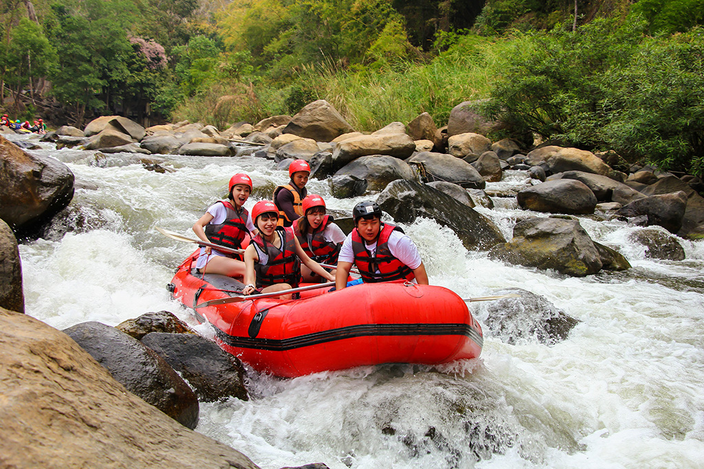
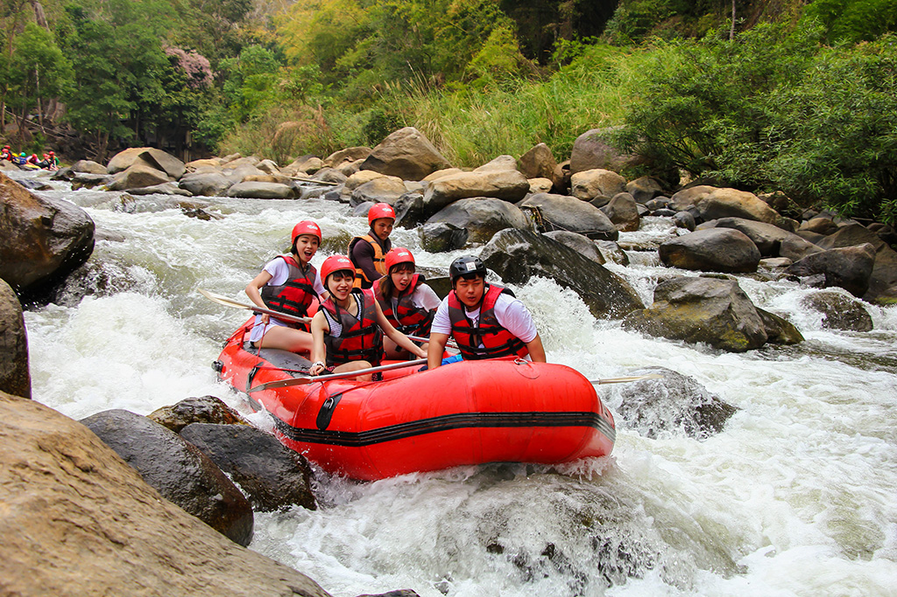

Our mission is to provide a safe, yet exciting, fun filled activity for all ages groups, whether 8 or 80!

Our mission is to provide a safe, yet exciting, fun filled activity for all ages groups, whether 8 or 80!
There are not many places in Britain that have rivers that are fast flowing or wide enough to facilitate White Water rafTing. Yet John Morris, his brother Robert and friend, Ken Cunningham located such a place high in the Welsh Cambian Mountain range in the head waters of the river Severn, the longest river in the United Kingdom. The three friends have gained much expertise in all facets of rafting, working overseas in both the USA and Peru. With the approval of the Welsh Government, the Welsh Tourist Board and holding all the necessary safety certificates, the friends were able to get financial backing from Lloyds Bank and the Dragon Rafting Company was formed.


 
